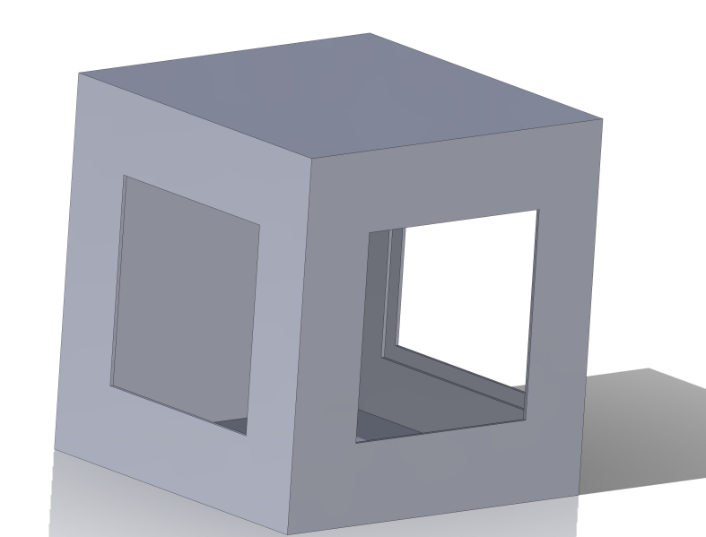
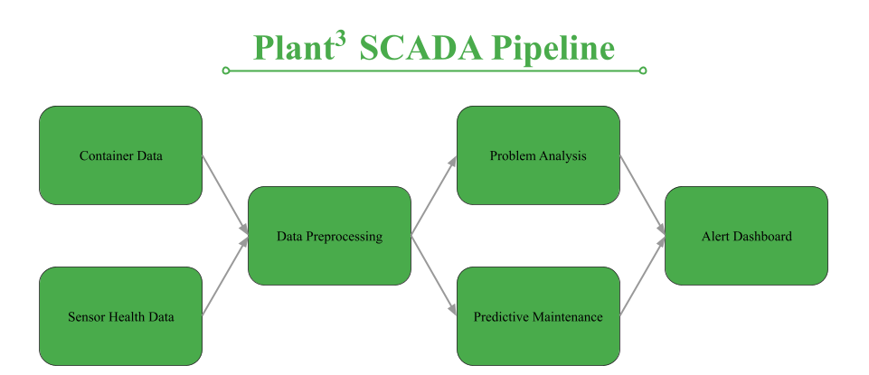
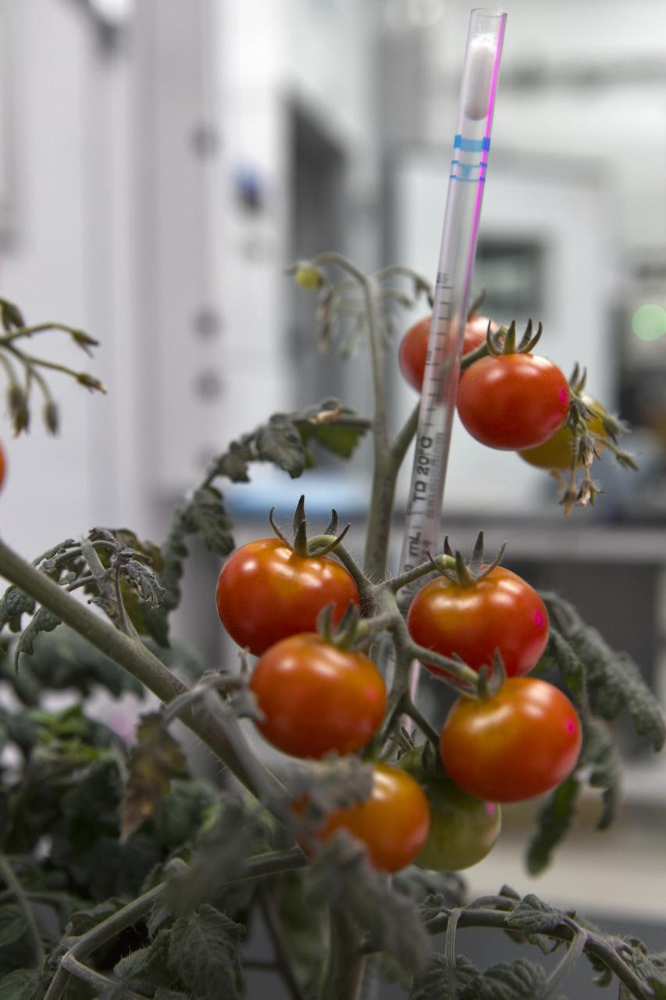
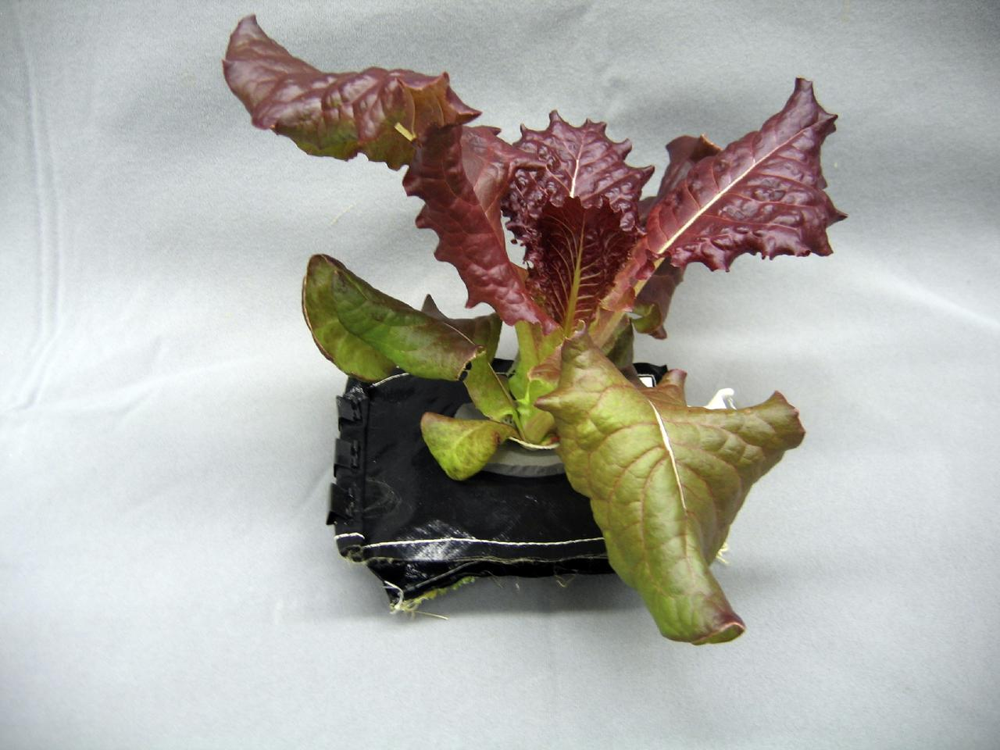
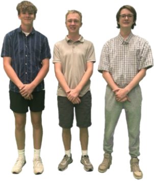

Autonomous AI Plant Growth Lab
An intelligent, enclosed autonomous growth chamber designed for lunar & space habitats. Featuring 24/7 computer vision stress diagnosis, micro-dosing irrigation, and autonomous environmental control.

Problem Statement
- Strict Spatial & Resource Limits: Current space plant enclosures operate under tight space and resource constraints.
- Manual Monitoring & Care: Astronauts must manually water and inspect crops, draining crew time.
- High Crew Time Drain: This labor-intensive process consumes valuable crew hours that could be spent on primary mission tasks.
Project Requirements
- 24/7 continuous environmental sensor monitoring.
- Moisture sensors detect individual plant water content in real-time.
- Automated micro-dosing water delivery matching specific plant needs.
- Enclosed growth habitat with multi-crop capacity (3 or more plants).
System Capabilities
Integrating durable hardware engineering with an autonomous data-driven SCADA software stack.
Physical Prototype Capabilities
Hardware SpecsDesigned for confined space habitat integration with structural wood framing, transparent acrylic viewing panels, and flexible sensor mounting points.
| Dimensions | 24" W × 24" D × 25" H |
| Structure | Wood framing + Plexiglass viewing panels |
| Dosing Pump | Jecod DP-3 Auto Dosing Pump System |
| Lighting | Viparspectra LED Growth Light Array |
| Moisture Sensing | SEN0114 Soil Moisture Sensor Nodes |
| Maintenance | Hinged back door for rapid maintenance access |
Code & AI Pipeline Capabilities
Software Stack
An end-to-end data processing pipeline (SCADA) that evaluates sensor telemetry and applies computer vision models to diagnose crop health.
| Edge Compute | Raspberry Pi Data Gathering Engine |
| Mobile / Web UI | Custom Monitoring Application Architecture |
| Container AI | Anomaly detection for temperature, air & moisture |
| Plant Health AI | Computer vision trained on leaf coloration & growth patterns |
| Restorative Action | Automated micro-dosing and parameter correction |
Chamber Telemetry & AI Diagnostic Feed
Simulated live feed from the Plant³ multi-crop monitoring dashboard.
-
Chamber 01: Dwarf Tomato
NOMINAL
Water StatusGoodFoliage HealthGood -
Chamber 02: Lettuce
WATER LOW
Water Status32% (Refill)Foliage HealthGood -
Chamber 03: Dwarf Tomato
NOMINALWater StatusGoodFoliage HealthGood
Specimen Telemetry Detail
Neural vision scan reveals no active fungal pathogens or nitrogen deficiencies.

Warren Tech — Plant³
Student Engineers: Brennon Hill, Conner Walpole, Grayson McDaniel
Instructors: Nathan Olsen & Veronica Murray
Emails: nolsen@jeffcoschools.us | veronica.murray@jeffco.k12.co.us
Program Alignment: Developed for the NASA HUNCH SFT 2026-27 AI Plant Growth for Space initiative.
Program Alignment: Developed for the NASA HUNCH SFT 2026-27 AI Plant Growth for Space initiative.